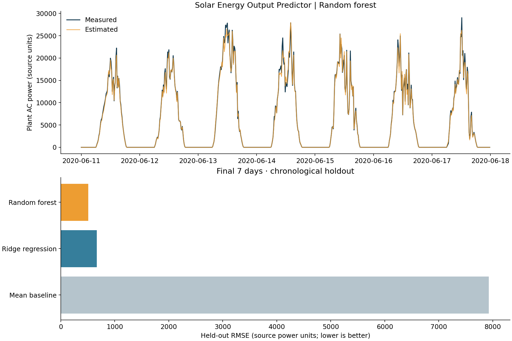

ENERGY × MACHINE LEARNING
A measured-weather estimator for one solar plant. Built with chronological model selection and a separate final holdout.

| Model | MAE | RMSE | R² |
|---|---|---|---|
| Mean baseline | 7,139.8 | 7,926.6 | -0.0218 |
| Ridge regression | 414.3 | 669.3 | 0.9927 |
| Random forest | 236.0 | 508.4 | 0.9958 |
Selected on validation data: Random forest. Power metrics use original dataset units. Daylight-only metrics and data exclusions are in metrics.json.
Data validation, complete-inverter aggregation, cyclic time features, baseline comparison, and reproducible evaluation.
34 days from one plant, with incomplete timestamps excluded. Same-time measured sunlight and temperature are required. This is not a future-weather forecast, and results do not establish performance at other sites or seasons.